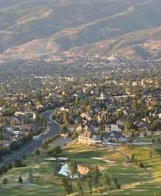

Gregory Nielson
About Me

My name is Greg Nielson. I was born and raised in Utah. I have lived here all my life except for two years spent in Italy for an LDS mission, and 7 years living in Oakley, Idaho while my kids were younger. I have five kids - 23 (G), 21 (B), 18 (G), 15 (B), and 10 (G). I am divorced and remarried. My wife also has five kids lol - 20 (G), 17 (G), 15 (G), 13 (B), and 10 (G). Lots of kids and lots of excitement! I am an IT consultant and project manager. In my off-time, when / if I ever have any, I coach track and field, participate myself, and lift weights.
North Salt Lake, Utah
North Salt Lake, Utah, is a vibrant, fast-growing city just minutes north of downtown Salt Lake City, offering the perfect mix of small-town charm and big-city convenience. Nestled against the scenic Wasatch Mountains and overlooking the Great Salt Lake, it’s a hotspot for outdoor lovers, young families, and professionals who want quick access to hiking trails, golf courses, and year-round community events like Liberty Fest and winter light shows. With a strong sense of community, top-rated schools nearby, and a median income over $100K, North Salt Lake combines natural beauty, opportunity, and livability in one of Utah’s most dynamic suburban hubs. (ChatGPT)